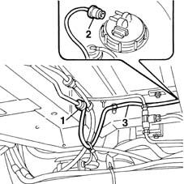
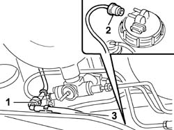

1040B36 REAR FUEL DELIVERY LINE - R R
- Path
- Procedures > 10 ENGINE UNIT > 1040 FUEL TANK AND PIPES > 1040B FUEL SUPPLY/RETURN CIRCUIT PIPE > 1040B36 REAR FUEL DELIVERY LINE - R R
- Kind
- repair procedure (removal / refitting; the operation number is the code)
- Applies to
- engines: 1.6 16v; all production periods; only with equipment: BIPOWER
- Interactive page
- https://sloeber94.github.io/elrnDB-fMltpl/en/#/2891457
Applies to: engines: 1.6 16v; production: fino a 05/04; only with equipment: BIPOWER
 Removing
Removing
 Refitting
RefittingPlace the car on a ramp.
Raise the car.
1. Disconnect the pipe from the rapid connector at the join with the front section of the supply pipe.
2. Disconnect the supply pipe from the rapid connector on the fuel pump.
3. Remove the front fuel supply pipe

Applies to: engines: 1.6 16v; production: fino a 05/04; only with equipment: BIPOWER
Refitting
RemovingFit the rear fuel supply pipe.
Connect the supply pipe to the fuel pump.
Connect the pipe to the rapid connector at the join with the front section of the supply pipe.
Lower the vehicle.
Remove the car from the lift.
Applies to: engines: 1.6 16v; production: da 06/04; only with equipment: BIPOWER
Removing
RefittingPosition the vehicle on a lift.
Raise the vehicle.
1. Disconnect the pipe from the fast-on fitting joining it to the front section of the delivery pipe.
2. Disconnect the supply pipe from the fast-on fitting on the fuel pump.
3. Remove the rear fuel delivery hose by releasing from the retainers on the reservoir.

Applies to: engines: 1.6 16v; production: da 06/04; only with equipment: BIPOWER
Refitting
RemovingFit the rear fuel delivery hose and secure to the retainers on the reservoir.
Connect the delivery pipe to the fuel pump.
Connect the pipe to the fast-on fitting joining it to the front section of the delivery pipe.
Lower the vehicle.
Remove the vehicle from the lift.